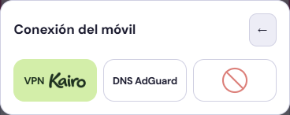
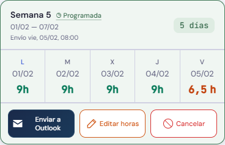

Conexión compacta y acciones equilibradas · v550


El selector no incluye los textos permanentes sobre acceso a Kairo o el widget. Las solicitudes y los errores se comunican mediante un aviso puntual. Se conserva el regreso a Ajustes y el recorrido de activación de VPN.
Enviar a Outlook cabe en dos líneas. Los tres botones comparten anchura y altura; mantienen sus acciones y las confirmaciones de edición.
Ejemplos ficticios. Validado en 320, 400 y 440 px y en los tres temas. Solo se actualiza la captura de Conexión DNS / VPN y este ejemplo del pie desplegado; se conservan las demás capturas.